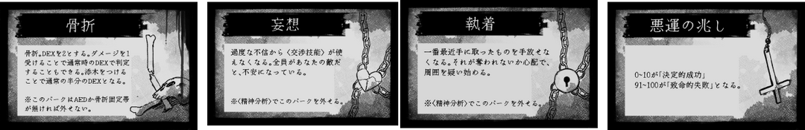
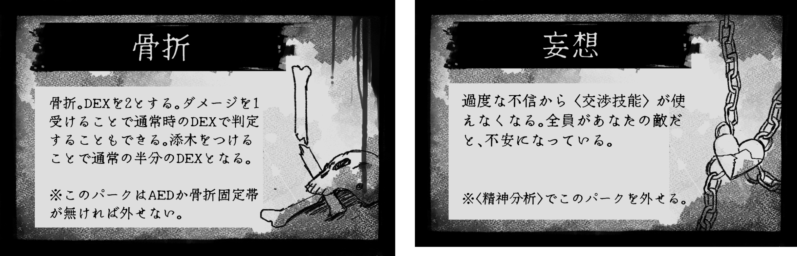

人と、魂がぶつかり合う、
TRPG（テーブルトークRPG）の原点に立ち返る。
サイコロが軽快に転がり、
ボールペンの音が響く。
大声で笑い合い、時には涙する。
生身の体験を共有する
感動を思い出そう。
TRPGは、
時代と共に電脳空間に移り変わった。
そのさらに先へ。
一瞬で恐怖に包み込む演出と、目の前で繰り広げられる心理戦。
この上ない緊張感と興奮があなたを待っています。
大型スクリーン、立体音響、
暗い密室に魔法の照明。
オフライン専用の探索者シートと、オフライン専用の演出。
生身の恐怖と感動は、
かけがえのない経験となる。
公演型TRPGは
最高のオフラインセッションを
作り出す。
探索者にある公的機関から特務召集令状なるものが届く。
三重県の山奥にある、周囲から隔離された研究所で違法に取り扱われているものがあるという。探索者たちはその奪取を命じられる。
偽造のIDが発行され、探索者たちは研究所に潜入するが、そこで探索者たちが見たものは......。
結末はプレイヤーの選択によって変わるマルチエンディング。公演型TRPGならではの体験をお楽しみください。
プレイ時間 ：5~6時間
プレイ人数 ：4~5人
探索者について：それぞれのプレイヤーには事前に探索者のプロフィール（いわゆるハンドアウト）が渡され、それに従って探索者を作成します。それぞれの探索者が異なるプロフィールや目的を持つため、探索者同士が対立する可能性があります。
本シナリオでは、『クトゥルフ神話TRPG』クラシック版（第6版）を基本としてセッションを行います。
ただし、公演型TRPGならではのセッションを楽しんでいただくために、いあプロジェクトオリジナルのルールやギミックを追加していることをご了承ください。
ただ、絶対にあなたがたをワクワクさせるものだと断言いたします。
山に登るのが好き。貯金をしていて、もうすぐで自分のお店が開ける。
推奨：〈登攀〉 〈こぶし〉 〈目星/ナビゲート〉
三重県の大学に勤めている。生物学会では割と権威はある。
推奨：〈交渉系技能〉 〈図書館〉 〈生物学/医学〉
やつれている。京都住みで神社を巡り記者のようなことをしている。
推奨：〈図書館〉 〈歴史〉
最近では大きな仕事を任されるようになった。そのためかあまり眠れていない。
推奨：〈応急手当〉 〈写真術〉
結婚して2年目。まだまだ配偶者にべったり。
推奨：〈目星〉 〈精神分析〉
1.〈目星〉〈聞き耳〉〈図書館〉
2.〈精神分析〉〈応急手当〉〈交渉系技能〉〈戦闘系技能〉
3.〈登攀/跳躍〉 【DEX】
第１陣 7月30日（日）
第２陣 8月2日（水）
第３陣 8月5日（土）
第４陣 8月6日（日）
開始 12時00分
終了 18時00分予定
会場 東京渋谷某所
第１陣 7月30日（日）
第２陣 8月2日（水）
第３陣 8月5日（土）
第４陣 8月6日（日）
開始 12時00分
終了 18時00分予定
会場 東京渋谷某所
本シナリオでは、基本的にクトゥルフ神話TRPGクラシック版に準拠してセッションを行います。ですが、セッションをより楽しんでいただくために、いくつかの特別なギミックがあることをご了承ください。ただ、絶対にあなたがたをワクワクさせるものだと断言いたします。
そのうちの２例をご紹介いたします。
本シナリオでは、アイテムを無限に持つことができません。アイテム毎にそれぞれ割り当てられた大きさに合わせて鞄の中に納める必要があります。カードの裏面には、資料の内容や、アイテムの効果などが書かれています。
本シナリオでは、外的損傷や狂気、呪い、特典をパークカードとして付与します。パークには良いものと悪いものの両方があります。邪神からの特典は人間の事情を考慮してくれません。
公演型TRPGは
最高のオフラインセッションを作り出す。
オフラインでしかできない体験を。
第１陣 7月29日（土）
第２陣 7月30日（日）
第３陣 8月5日（土）
第４陣 8月6日（日）
開始 12時00分
終了 18時00分予定
会場 東京渋谷某所
第１陣 7月29日（土）
第２陣 7月30日（日）
第３陣 8月5日（土）
第４陣 8月6日（日）
開始 12時00分
終了 18時00分予定
会場 東京渋谷某所
Q. お昼休憩はありますか？
A. ありません。ただ、シナリオの間に２回ほど、5~10分の休憩があります。
Q. TRPG初心者ですが、参加するのが不安です。大丈夫ですか？
A. 大丈夫です！ 上級者も初心者も楽しめる幅広いシナリオになっています。
ただ、初めてのTRPGだとルールが複雑で難しいかもしれないので、事前に2、3シナリオほど回ってから参加していただくことをお勧めします。